계정을 왜 여러 개 돌리나요
발표자는 큰 OFM 에이전시가 모델 한 명의 사진과 영상을 계정 하나가 아니라 20개, 50개, 많게는 100개에 나눠 올린다고 해요. 그렇다고 책상 위에 폰 100대를 늘어놓지는 않는다는 게 이 영상의 출발점이에요.
돈이 들어오는 길부터 봐요. 아래 화면에서 왼쪽 인스타그램 프로필의 바이오 링크가 노란 선을 타고 오른쪽 끝 동전 아이콘까지 이어져요. 릴스를 본 사람이 프로필로 오고, 바이오 링크를 누른 곳에서 수익이 생긴다는 그림이에요.
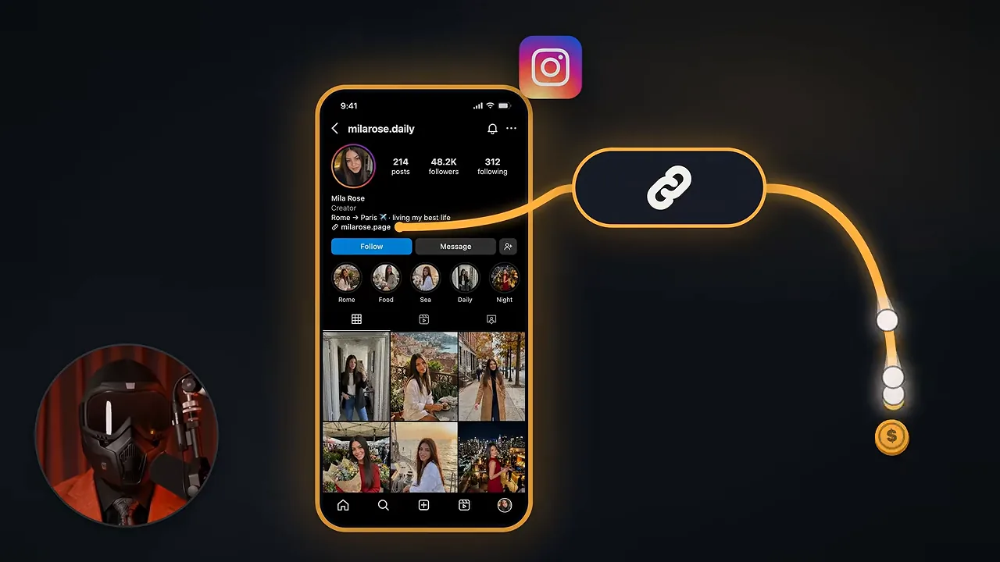
계정 하나로는 왜 안 될까요
요즘은 에이전시도 AI(Artificial Intelligence) 모델도 너무 많아졌다고 해요. 계정 하나에 하루 릴스 한 편을 올리면 화면의 숫자처럼 300회쯤 보이고 끝난다는 거예요.
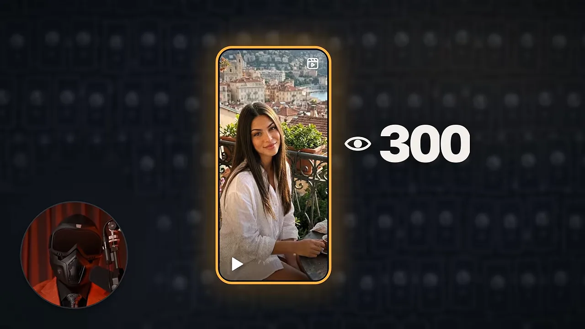
발표자의 비유는 복권이에요. 계정 하나는 매일 복권 한 장이고, 계정 20개면 매일 20장이에요. 어느 한 장이 바이럴로 터지기를 노리는 셈이에요.
폰 한 대에 계정 20개는 안 돼요
그렇다고 폰 한 대에 계정을 20개 만들 수는 없어요. 아래 화면은 폰 한 대 안에 프로필 사진 20개가 들어찬 모습이에요. 오른쪽의 지문 아이콘은 기기 정보, 와이파이 아이콘은 인터넷 연결을 뜻해요. 인스타그램은 이 두 가지를 보고 같은 사람이 만든 계정이라는 걸 알아챈다고 해요.
실물 폰, 에뮬레이터, 클라우드 폰
그러면 폰 20대는 어디서 구할까요? 발표자는 세 가지 길을 비교해요.
| 방법 | 좋은 점 | 발표자가 꼽은 문제 |
|---|---|---|
| 실물 폰 구매 | 진짜 폰이에요 | 20대면 돈이 많이 들어요. 충전·업데이트·인터넷 연결을 하나하나 챙겨야 하고, 여행 가면 폰은 집에 있어요 |
| 에뮬레이터 (BlueStacks 등) | 싸요 | 인스타그램이 컴퓨터라는 걸 알아채서 도달이 떨어지거나 정지돼요 |
| 클라우드 폰 (devicefarm.io) | 브라우저로 어디서든 열고, 처음 드는 돈이 적어요 | 월 요금에 켜 둔 시간만큼 요금이 붙어요 |
에뮬레이터의 문제를 보여 주는 장면이 아래예요. 컴퓨터 창 세 개 중 가운데 창에 빨간 금지 표시가 붙고, 위에는 인스타그램 아이콘이 있어요.
클라우드 폰은 무엇이 다를까요
발표자가 쓰는 서비스는 devicefarm.io예요. 아래 화면은 이 서비스 소개 페이지인데, 가운데 폰 한 대에 꼬리표가 붙어 있어요. 왼쪽은 IMEI(International Mobile Equipment Identity)와 MAC(Media Access Control) 주소 같은 기기 고유 번호, 오른쪽은 프록시(socks5 · United States), Android 14, 위치(New York)예요.
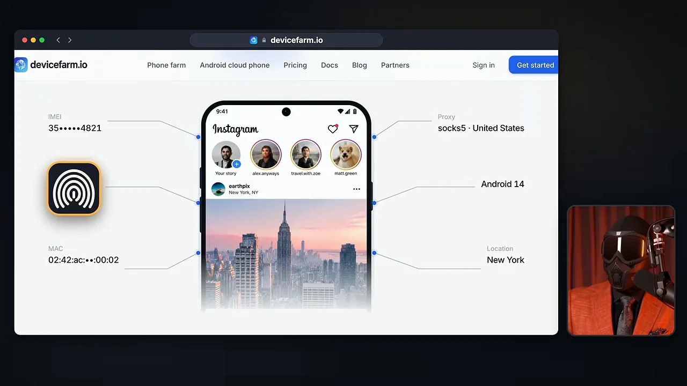
발표자는 이 폰들이 에뮬레이터가 아니라 일반 폰과 같은 종류의 칩에서 도는 진짜 Android라고 강조해요. 가격은 확실히 기억하지 못한다며, 월 요금에 폰을 켜 둔 동안 분당 1센트쯤 붙는 것 같다고만 말해요.
Play Integrity 검사
Google에는 기기가 진짜 폰인지 보는 Play Integrity라는 검사가 있어요. 아래 화면처럼 폰 그림을 스캔 틀이 감싸고, 아래에 동그라미 세 개가 놓여 있어요. 발표자는 자기 클라우드 폰이 세 항목을 모두 통과했다고 말해요.
게시는 자동으로
폰 20대에 손으로 릴스를 올리지는 않아요. 서비스에서 한 번 계획해 두면 계정마다 차례로 올라가요. 더 세밀하게 하고 싶으면 Claude 같은 AI를 연결해 말로 시켜요. 왼쪽 화면은 입력창에 'post those reel'을 치는 장면이고, 오른쪽은 그 결과로 릴스 20개 위에 7 PM 시계가 뜬 장면이에요.
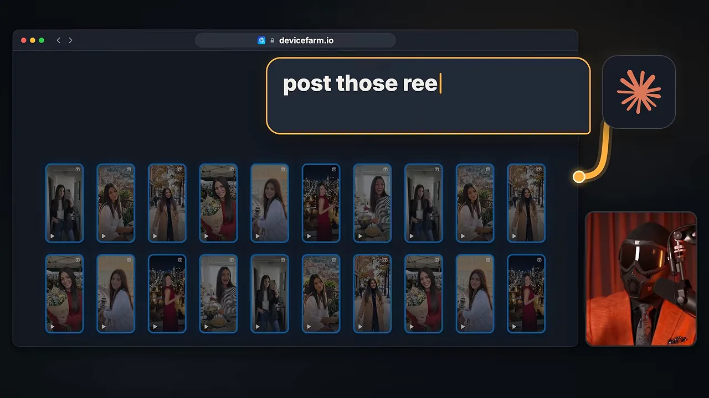
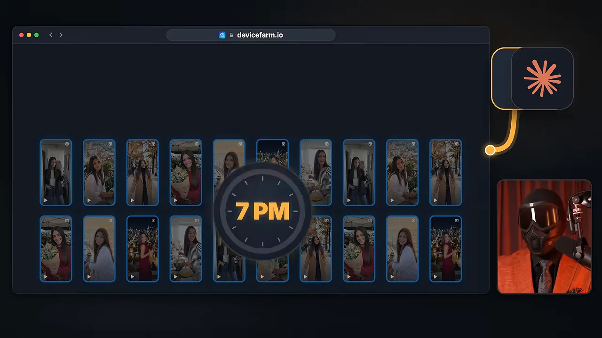
클라우드 폰 만들고 프록시 붙이기
폰은 첫 단계일 뿐이에요. 발표자는 계정을 잘못 만들면 완벽한 폰에서도 정지되거나 도달이 0이 된다며, 계정 하나를 만드는 순서를 직접 보여 줘요.
폰 만들기
devicefarm.io의 Phones 화면이에요. 이미 만든 폰 카드가 늘어서 있고, 카드마다 국가(Belgium, France 등), Android 14, 폰 기종이 적혀 있어요. 오른쪽 위 파란 New phone 버튼을 눌러 새 폰을 만들어요.
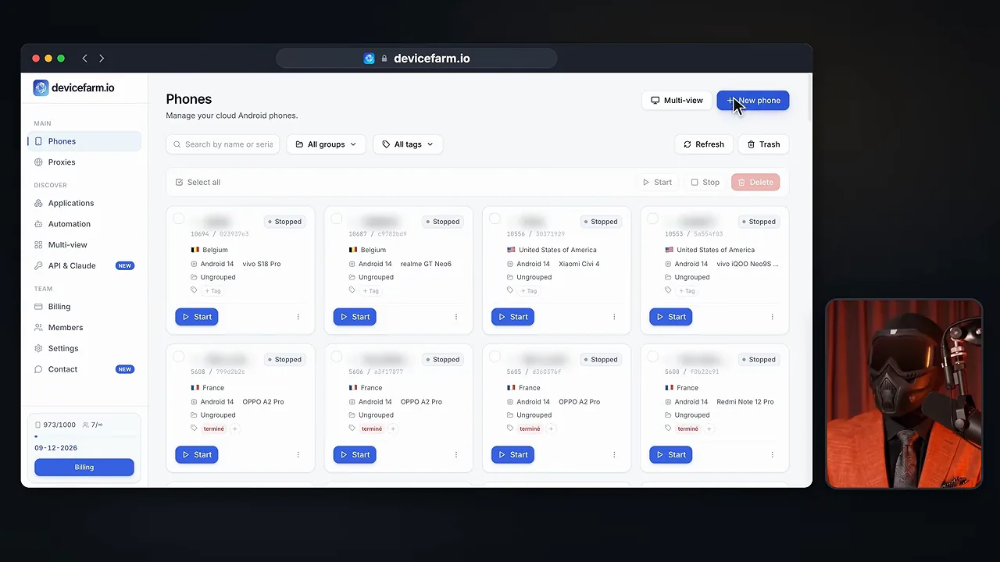
New phone 화면에서는 이름 칸에 Instagram 1을 넣고, Android version을 Android 14로 골라요. 그 옆 초록 표시에 'Supports Google Play Integrity'라고 적혀 있어요. 나머지는 기본값으로 둬도 된다고 해요.
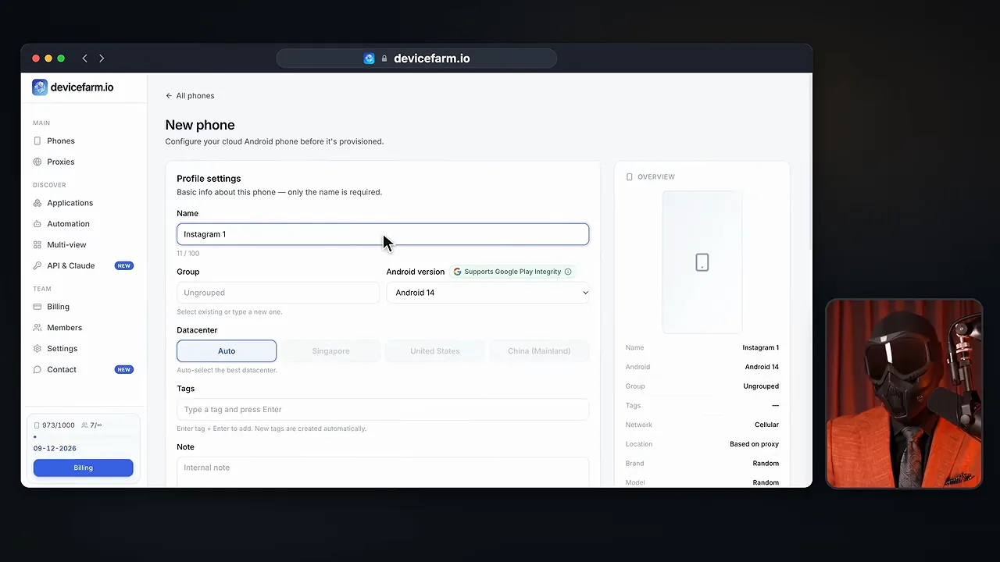
조금 내려가면 Proxy 칸이 나와요. Type을 SOCKS5로 고르는 부분이 주황 테두리로 강조돼 있어요. Host 칸 아래에는 'host:port:user:pass 같은 한 줄을 붙여 넣으면 나머지 칸이 채워진다'는 안내가 있어요.
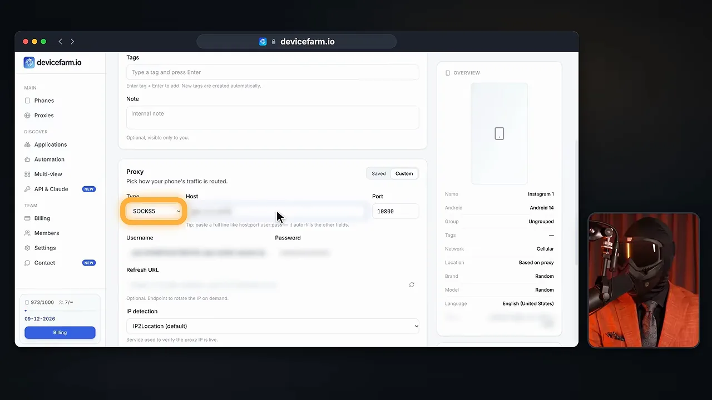
어떤 프록시를 붙일까요
발표자가 '여기는 정말 중요하다'고 짚는 부분이에요. 프록시는 세 종류가 있고, 인스타그램에 어떻게 보이는지가 달라요.
| 종류 | IP(Internet Protocol)가 어디서 오나요 | 발표자의 평가 |
|---|---|---|
| 데이터센터 프록시 | 큰 서버 | 인스타그램이 알아보고 싫어해요 |
| 주거용 프록시 | 가정 인터넷 | 낫지만 이 용도에는 최선이 아니에요 |
| 모바일 프록시 | 통신사의 실제 4G·5G 망 | 보통 사람이 보통 폰을 쓰는 것처럼 보여서 이걸 써요 |
발표자는 모바일 프록시를 스티키로 받아요. IP가 몇 분마다 바뀌지 않고 그대로 머문다는 뜻이에요. 그래서 '계정 하나, 폰 하나, 고정 IP 하나'가 돼요. 업체는 영상에서 'proxylexis.com'으로 들리지만, 이 주소로는 접속되지 않아 실제 철자를 확인하지 못했어요.
마지막 선택은 HTTP(Hypertext Transfer Protocol)냐 SOCKS5냐예요. 아래 그림에서 SOCKS5라는 꼬리표가 붙은 굵은 관이 인스타그램 아이콘에서 폰 안쪽까지 이어지고, 옆에 자물쇠 달린 신호 아이콘이 있어요.
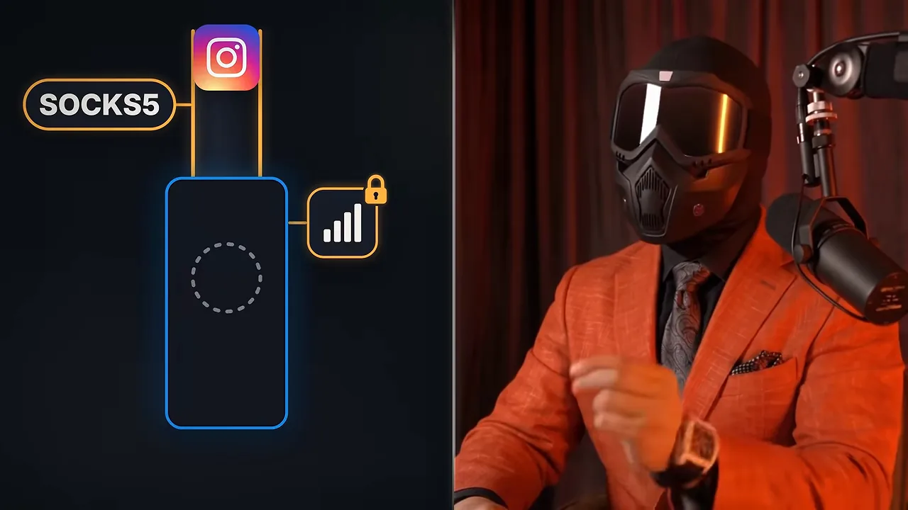
인스타그램 설치, 가입, 워밍업
폰을 켜고 열면 브라우저 안에 폰 화면이 그대로 떠요. 발표자는 여기서부터를 '정말 중요하다'고 말해요.
인스타그램은 Play 스토어에서만
Google 계정으로 Play 스토어에 로그인하고, 보통 폰처럼 인스타그램을 검색해 설치해요. 아래 화면 가운데가 클라우드 폰 속 Play 스토어이고, 검색 결과에 Instagram이 보여요.
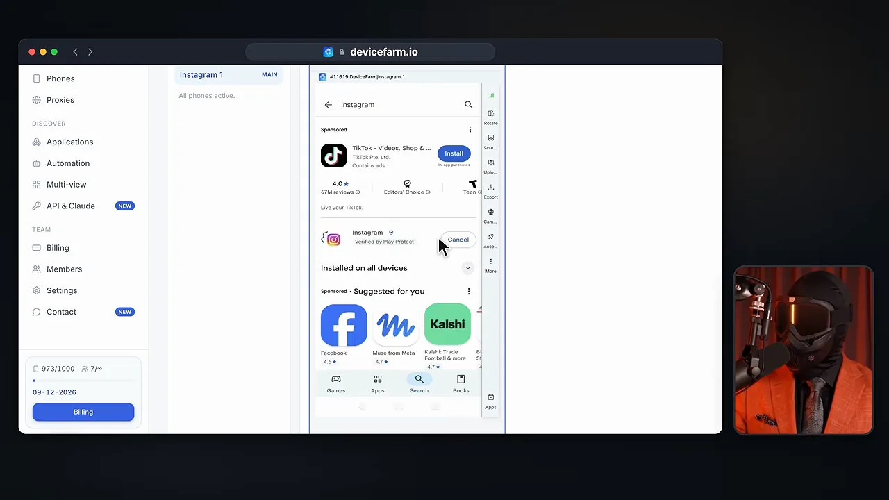
devicefarm.io에도 앱을 바로 깔아 주는 Applications 메뉴가 있어요. 화면에 TikTok, Instagram, Facebook, YouTube 같은 앱 카드가 버전과 함께 늘어서 있어요. 발표자는 인스타그램만큼은 여기서 절대 깔지 말라고 해요. 최신 버전이 아닐 때가 있고, Play 스토어에서 받지 않은 앱이면 인스타그램이 알아채는 것 같다는 이유예요.
위쪽 노란 안내 상자도 같은 말을 해요. 이 목록에서 깐 앱은 Google Play에서 온 게 아니라서 인스타그램이 가입 때 캡차를 띄운다고 적혀 있어요.
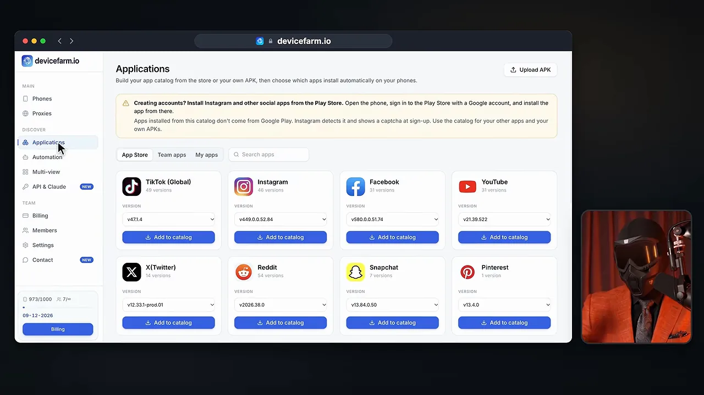
가입: 캡차가 뜨면 그 계정은 버려요
발표자 말로는 Play 스토어 설치와 모바일 프록시를 함께 쓰면 보통 셀피 확인도 캡차도 없이 가입돼요. 반대로 새 계정에 둘 중 하나가 뜨면 인스타그램이 이미 감지했다는 뜻이라, 그 계정은 도달이 나오지 않는 '죽은 계정'이라고 봐요.
가입 수단은 전화번호가 아니라 Gmail이에요. 아래 그림에서 위쪽은 Gmail 아이콘이 프로필과 노란 선으로 이어져 있고, 아래쪽 전화 말풍선에는 여러 사람 아이콘이 겹쳐 있어요.
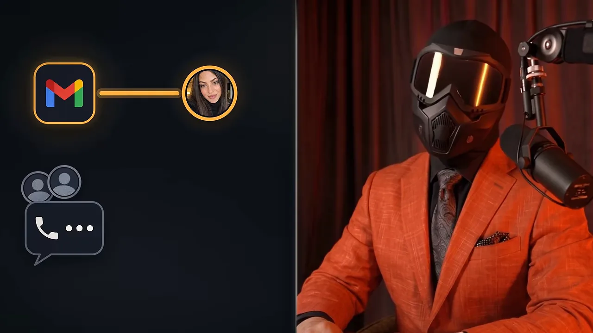
워밍업은 하루
흔히 '게시 전에 2주는 워밍업하라'고 하지만 발표자는 그렇게 하지 않아요. 왼쪽 그림은 1일 차 달력 옆으로 2주짜리 칸에 빨간 줄을 그은 모습이고, 오른쪽은 2일 차에 릴스에 체크 표시가 붙은 모습이에요.
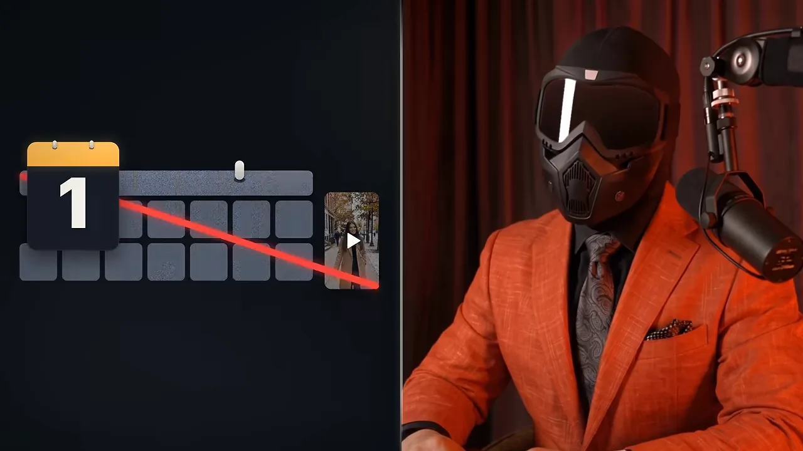
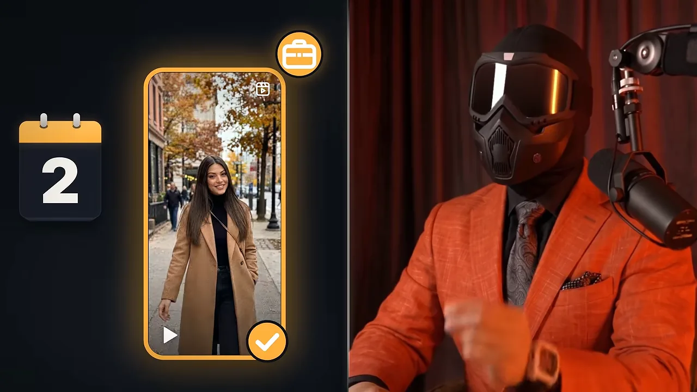
바이오 링크 클로킹과 전체 정리
마지막은 바이오 링크예요. 발표자는 바이오에 링크를 바로 넣어도 정지되지 않을 수 있지만, 클로킹 링크일 때만이라고 해요.
아래 그림에서 왼쪽 링크가 빨간 선을 타고 오른쪽 카드로 이어지는데, 카드 둘레에 빨간 스캔 틀이 쳐져 있어요. 인스타그램 봇이 바이오 링크를 열어 어디로 가는지 확인하는 장면이에요.
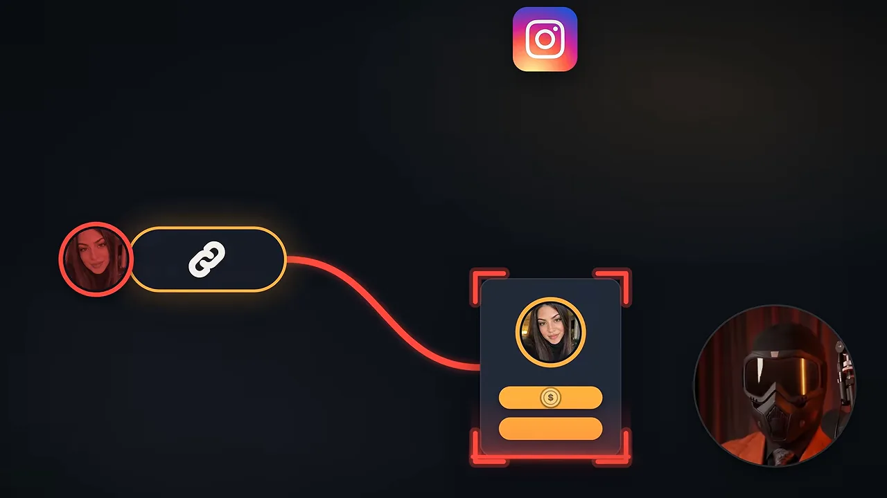
클로킹 링크는 봇에게는 깨끗하고 안전한 페이지를 보여 주고, 실제로 누른 사람에게는 진짜 페이지를 보여 줘요. 발표자는 mydm.bio라는 서비스를 써요.
제대로 클로킹됐는지 확인하는 법
친구에게 DM(Direct Message)으로 링크를 보내 보라고 해요. 채팅창이 만드는 링크 미리보기도 봇이 만든 것이기 때문이에요. 아래 그림은 DM 창에 회색 미리보기 카드가 뜨고, 그 위에 변장한 듯한 링크 아이콘이 얹혀 있어요.
전체 순서 다시 보기
발표자가 마지막에 묶어 말한 순서를 한 줄로 그리면 이래요. 앞 단계 하나라도 어긋나면 뒤에서 캡차나 도달 0으로 돌아온다는 게 영상 전체의 흐름이에요.
flowchart LR A["클라우드 폰
Android 14"] --> B["모바일 프록시
스티키 · SOCKS5"] --> C["Play 스토어에서
인스타그램 설치"] --> D["Gmail로 가입
캡차 없으면 통과"] --> E["1일 차 워밍업
2일 차 게시"] --> F["바이오에
클로킹 링크"]
다음 영상에서는 GLM(General Language Model) 5.3으로 이 폰들에서 돌릴 자동화를 직접 만드는 법을 다룬다고 예고하며 끝나요.